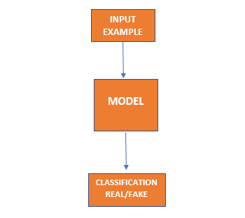
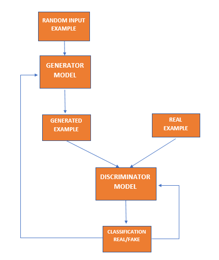

An Introduction to Generative Adversarial Networks
We, humans, possess a trait of creativity that makes us superior to robots and all other artificial intelligent systems. But today scientists are putting their efforts to transfer creativity to artificial systems as well. There was a time that people draw paintings and show their creativity to others.

You would be familiar with the image on the left it is famous Mona Lisa by Leonardo de Vinci but do you know that the painting on the left was never made by any artist but it is made using an Artificial Intelligence technique called GANs- Generative Adversarial Networks. The concept of GANs was introduced in 2014 by IAN Goodfellow and later on, a well-defined theory was given by Alac Redford in 2016 and known as deep convolutional general neural networks. GANs are having many real-world applications as they mimic humans' creativity. Most of the applications are based on images and paintings. Let us see how this all works.
Supervised vs Unsupervised Learning
Supervised Learning- This is analogous to "Learning from a teacher". It means that you are provided input as labeled data and also the correct outputs in labeled form. We use this data for training and then after sufficient training, your model can predict or classify different inputs.
So in the Supervised learning approach, the goal is to learn a mapping from inputs x to outputs y, given a labeled set of input-output pairs.
Unsupervised Learning- This is analogous to "Learning without a teacher". Here we are given labeled input data but we don't know the output. Now, this data is given to the model and the model finds the patterns in the data and generates different outputs based on the given input data set.
In the Unsupervised learning approach, we are only given inputs, and the goal is to find "interesting patterns" in the data even we are not told what kinds of patterns to look for. Also, we can't compare our observed results with expected results like in supervised learning.
So GANs uses CNN algorithms in both Supervised and Unsupervised learning. The generator model is formed by using Unsupervised Learning and the Discriminator model is formed using Supervised Learning. By using both these models we can make our GAN efficient. Both the Generator and Discriminator models are adverse of each other and the Generator has to generate outputs that are indistinguishable by Discriminator hence we call these networks Generative Adversarial Networks.
Now we have looked at what Supervised and Unsupervised learning means now it's time to talk about how these techniques are used to make Discriminative and Generative Models.
Discriminator Model
Using supervised learning we can develop a model to predict a class label given an example from or other than input variables. So suppose if we are giving input as an image then our discriminator model can classify that whether the image belongs to the same input data set implies real and if they are not from input data set then fake.
This predicting class is called classification.
This type of classification in GANs is given a fancy name as discriminative modeling.
This is because a model must discriminate examples of input variables across classes; it must choose or decide as to what class a given example belongs.
Generator Model
Unsupervised models are able to distribute input variables create or generate new examples from the input data.
As such, these types of models are referred to as generative models, because they are generating a different input from what it was provided with.
An approximate good generative model is to generate new examples that are not just only valid but also are indistinguishable from real examples in the input. Once the generator model is good enough that it can generate some examples that discriminator is fooled or can't classify-unsure that 50% chance is that it is real and 50% chance that it is fake then we discard discriminator as our generator model is now trained enough.
So concluding Discriminator and Generator models as:
Discriminator-> Model that is used to discriminate as real or fake from the outputs of Generator.
Generator-> Model that is used to generate new valid examples from the input data set.
How Discriminator and Generator Model works together?
The generator model is based on an unsupervised learning problem, but in GANs training of the generative model is made as supervised learning. The generator and discriminator models are trained together. The generator generates examples and these examples, along with real examples from the domain, are provided to the discriminator and classified as real or fake. The discriminator is then updated to get better at discriminating real and fake samples in the next epoch or iteration, and importantly, the generator is updated based on how well, or not, the generated example fooled the discriminator.
So we can say that both the models are adverse of each-other and this thing benefits us in increasing the accuracy of our generative model.
When the discriminator successfully identifies real and fake examples no updates are done in its weight values for increasing its accuracy but the generator model's weight values are updated.
Similarly, when the generator successfully fools the discriminator no changes are done in generator weight values but the discriminator weight values are updated.
An Overall GAN Architecture
After multiple iterations, we will reach a point where the generator generates examples from the input domain, and the discriminator cannot tell the difference and predicts like it is 50% chance for real and 50% chance of fake. But this is a very ideal condition we don't get that much accurate.
SOME APPLICATIONS OF GANs
- Generate Examples for Image Datasets
- Generate Photographs of Human Faces
- Generate Realistic Photographs
- Generate New Human Poses
- Face Aging
- Deepfakes
- Generate Cartoon Characters
- Image-to-Image Translation
- Text-to-Image Translation
- Photos to Emojis
- Photograph Editing
- Next frame generation in videos
To Sum up using GANs we are adding creativity to machines as well, they can generate and make things that never existed before. Can these machines surpass the creativity of its creator (humans)? Who knows that the next world war starts because of Deepfakes (an application of GANs).